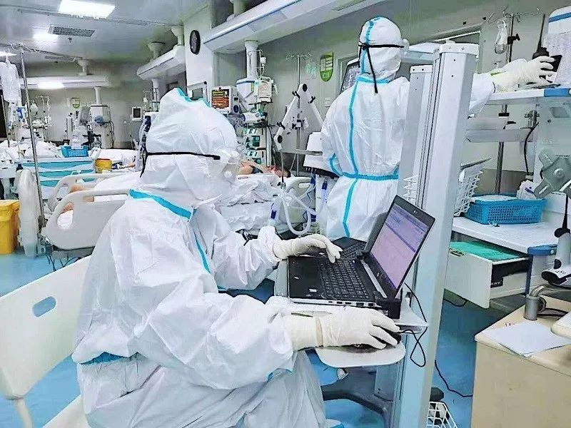
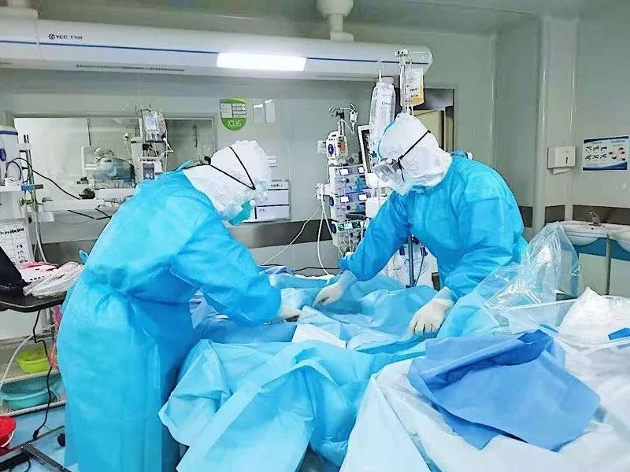

武汉抗“疫”27日考：追忆那些被贻误的宝贵时机-中经实时报-中国经营网
原文链接 备份链接 武汉抗“疫”27日考：追忆那些被贻误的宝贵时机 2020-01-26 20:28 作者：张家振 来源：中国经营网 本报记者 张家振 武汉报道 （武汉抗“疫”一线的逆行者。） 1月24日，除夕夜。39岁的张琴（化名）和丈 …

特约撰稿 李梦琪 本报记者 郭阳琛 石英婧 上海报道
“我比很多同事都幸运，除夕是在家过的。”已经在抗击疫情一线连续奋战了二十多天，除夕夜能和家人在一起度过让武汉市肺科医院隔离病区护士吴青（化名）格外欣慰。
由于武汉疫情的蔓延，每天连续工作9小时以上是吴青和隔离病区同事们的“常态”，中间只有午饭时间能歇一会，加班更是“稀松平常”。
作为武汉中心城区针对新冠肺炎疫情的三家定点救治医疗机构之一，武汉市肺科医院一直处于战线的最前端。吴青告诉《中国经营报》记者，目前医院共有三个隔离病区，包括ICU在内的确诊新型冠状病毒感染的肺炎患者超过100名，很多轻症或排除新型肺炎的发烧患者也无法入院治疗。
与此同时，院方提供的防护措施以及社会的资助已经逐渐到位。更有众多武汉市民自愿组成志愿者车队，为吴青和其他医护人员提供免费上下班接送服务。“医院、医护人员、患者、志愿者等都在努力，很多医护人员都像我一样逐渐增加战胜疫情的信心。”

3个隔离病区超百名确诊患者
据吴青介绍，目前，武汉市肺科医院共有3个隔离病区，包括ICU在内收治的新型肺炎确诊患者共有100多人，“多的时候一个隔离病区每天会收治八九名新病人，少的时候整个医院新增10多个病人”。
“目前医院诊治压力蛮大的，所以只有高度疑似或重症患者才能入院治疗。”吴青告诉记者，患者到肺科医院后，先要到发热门诊做相关检查，包括拍CT、查血、咽试纸测试等，如果症状较轻或排除新型肺炎，医院会建议患者在家自行隔离或在门诊进行服药；如果患者检查结果高度疑似新型肺炎，我们会先收住院，然后再进一步做核酸实验进行确诊，“现在核酸实验的试剂盒是够用的，包括我们医院，基本上武汉每家定点医院都有条件进行核酸实验”。
“在家隔离的患者最重要的就是随时要戴口罩，即使在家也是。”吴青建议，暂时无法入院治疗的患者，如果本身就有咳嗽、发热等症状，尽量要戴N95口罩。同时，新型冠状病毒对热和酒精还是敏感的，出门回来后，可以在钥匙或者是门把手表面用酒精擦拭，并勤洗手。
这么多的确诊和疑似新型肺炎患者，如何避免交叉感染？“我们会将同病种同病源的安排在一起。”吴青向记者表示，重症患者会尽量安排单间病房，男性和女性患者也是严格分开的，而一些高度疑似的病例也不会和确诊病例安排在一起。
吴青护理治疗的患者已经数不清了，但印象最深刻的是一名武汉本地中年女性患者。
吴青记得，这名患者刚开始入院时，内心十分恐慌、担心，每天都在手机上查找新型肺炎的资料，还时常拉着吴青和其他医护人员询问病情，吴青每次会跟她很耐心地做一些健康宣教，安抚她的心情。
“我觉得我的病症也不是那么重，为什么又吃这个药？为什么还不让我出院？”有段时间，那名患者情绪上开始出现波动，时不时向吴青抱怨。蔓延的疫情对医护人员是持久战，对病人也是。病人开始怀疑一切，总觉得回家才会踏实、安全。“我觉得医护人员要做的就是用真心对待他们。”吴青表示。
吴青告诉记者，渐渐地，那名患者也开始理解为她治疗的医生、护士们，后来只要有医护人员进病房，她都会说声“谢谢，辛苦了”，“我们听了心里也很感动，更开心的是几天前她终于如愿治愈出院了”。



（图片来源：受访者供图）
“每个人都在战斗” 超30例肺炎患者被治愈
“到现在为止，我们医院共有30余例病毒性肺炎治愈出院，这其中包括确诊为新型肺炎的，也有最后确认只是普通病毒性肺炎的。”在吴青看来，这是医院、医护人员、患者、志愿者等一起打赢的一场“阶段性战斗”。
武汉市肺科医院ICU医生陈玉梅主动推迟婚期，得知武汉“封城”消息后，直接打包行李住在医院；呼吸科医生曹探赜的爱人怀孕38周，因肾结石发作急诊住院需立即剖腹产，但因科室医生人手不足，曹探赜依旧坚守岗位值夜班；ICU主任医生胡明曾把1名呼吸骤停患者从死亡线拉回。因为患者病情危重，每天仅能休息2～3个小时，手因长时间罩在双层手套里总是肿胀发白，已经半个多月没见过九岁的儿子……“很多医护同事都暂时放下了‘小家’，留在疫情一线持续战斗，类似的故事也许每天都在上演。”吴青如是说。
“医院现在的防护措施还是比较充足的，口罩、防护服等物资也暂时没有空缺。”据吴青介绍，前段时间，武汉市肺科医院给每位医护人员发两盒维C泡腾片以增加免疫力；最近，医护人员办公室已经配备了一个大型的空气消毒机和一个小型的紫外线消毒机。医院也开始发放中药制剂和阿尔法干扰素，每人分别有12袋和2盒，“中药都是已经煎好的，这两种药都能起到一定的预防作用”。
“让我觉得暖心的还有武汉民间的志愿者。”吴青表示，在武汉开始限行了后，很多她的同事都没有车，住得也很远，出租车也很难打到，网约车半小时都没人接单。“没想到有很多志愿者主动联系我们，派人专门开车接送。1月25日凌晨2点，志愿者管理员还在给我打电话，帮我联系一些住宿的地方。”
“我身边的朋友也是，知道医护人员出行不方便，然后就给我打电话，就问需不需要他们来接送上下班。不管是出行、住宿还是物资方面，每天都会有人来关心，让我们感觉有很多人跟我们一起在战斗。”吴青说。
但因为武汉“封城”，公共交通全部停运，吴青和很多同事没有时间精力每天回家，也担心“自己给家人增大感染风险”，住宿成了她们的“头等难题”。
由于武汉市肺科医院安排的住宿条件比较差，医院也一直在帮忙联系附近的酒店，但却不太顺利。“医院也是有心无力，前段时间我们连洗澡都要排长队。”吴青如是说。
武汉市肺科医院与同济协和医院挨得很近，医院周边还在营业且具备消毒杀菌条件的酒店本就不多，基本都被同济协和医院“承包”了。吴青说，“我们医院是专科医院，不像大型三甲医院媒体报道力度那么大，我们在公开的、符合标准的房源里找，有些明确表示只接待同济协和医院。有酒店负责人还反问我们‘肺科医院是什么，媒体怎么都没提过？’”
“现在医护的住宿问题也解决了！”1月26日晚上8时，吴青激动地告诉记者，肺科医院已经帮医护人员联系到了酒店住宿，“各行各界现在都在帮助我们，我们医护人员也会尽心尽力做好诊治工作，希望让社会看到更多患者被治愈”。
（编辑：石英婧 校对：彭玉凤）

推荐阅读

点击大图 | 独家|武汉抗“疫”27日考：追忆那些被贻误的宝贵时机
点击大图 | 独家|重回武汉肺炎起点：卖野味的华南市场老板是谁？

原文链接 备份链接 武汉抗“疫”27日考：追忆那些被贻误的宝贵时机 2020-01-26 20:28 作者：张家振 来源：中国经营网 本报记者 张家振 武汉报道 （武汉抗“疫”一线的逆行者。） 1月24日，除夕夜。39岁的张琴（化名）和丈 …
原文链接 备份链接 支援武汉的医护人员已上千，地方900多人，军队450人，随后将再派1600多人。 武汉医护人员身心俱疲，难以应对不断增长的病例和民众的恐慌。 外援的到来，缓解了他们的负担。不少援汉医护人员感到，仅从肺炎诊治难度而 …
原文链接 备份链接 17 年前的那场公共卫生危机，未能及时公开疫情成为事后被诟病最多的问题之一，也成为中国疾病防控系统以及政府信息公开等许多方面的重要转折点。 而多年后，越来越多的互联网官方渠道成为了重大事件的定海神针，「官宣」被普遍接 …
原文链接 备份链接 1月25日，是中国鼠年的第一天，也是武汉封城的第3天。非常时期，武汉成了全国人民挂念、祈福的城市。封城后，武汉人民的真实生活是什么样？正和岛自今日起特别推出《叶青：我在武汉疫区的第N天》专栏。叶青是一位定居武汉40年的 …
原文链接 备份链接 【财新网】（记者 张帆）1月24日中午12点左右，作为疫情爆发中心地的湖北省姗姗启动重大突发公共卫生事件一级响应。而在此之前，从1月23日起，已有浙江、广东、湖南、北京、上海、天津、安徽、重庆、四川等多个省份启动一级 …